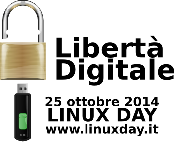
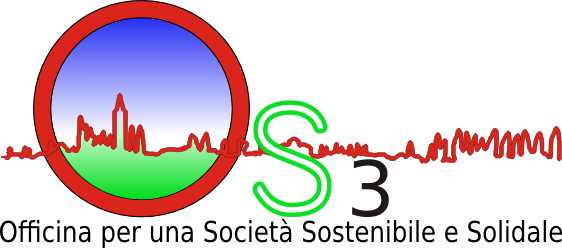
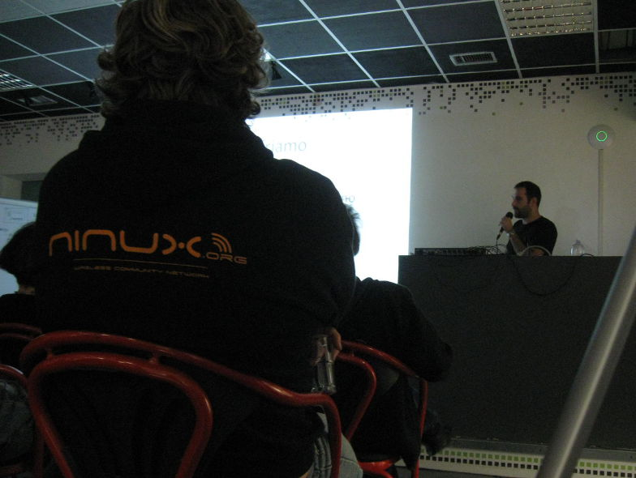
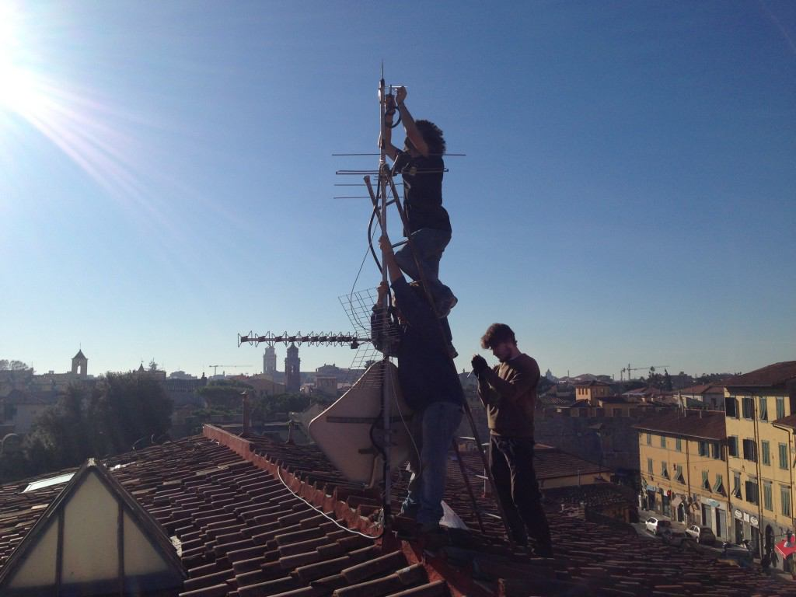
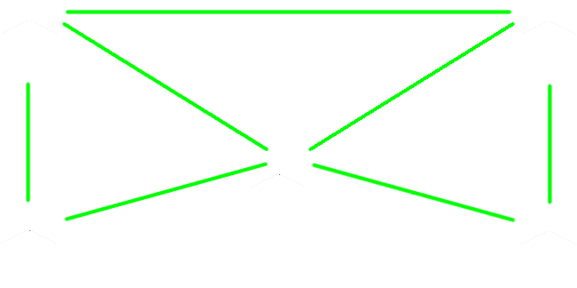
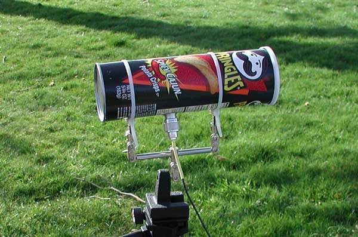
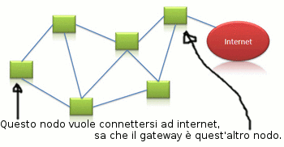

NinuxVerona
La community wireless di Verona
Presentato da Ilario Gelmetti / ilario@eigenlab.org
Presso Officina S3, 2014-10-25, Caselle di Sommacampagna.
In occasione del LinuxDay 2014
|  |  |
Cos'è Internet?
inter-net = reti (fisiche) interconnesse
Ciascuna rete si gestisce in modo autonomo.
Creiamo una nuova rete.
Ma facciamola a modo nostro.
Fare una nuova rete? Perché? - 1
- Smanettare!
- Nel nostro piccolo siamo radioamatori, programmatori, sistemisti e muratori!
Fare una nuova rete? Perché? - 2
- Performances!
- Per avere una connessione ganza coi nostri amici! Meno latenza, più banda!

Fare una nuova rete? Perché? - 3
- Attivismo!
- Libertà di comunicazione, censura e/o spegnimento totale impossibile, network neutrality, struttura fisica e gestione decentralizzata, software open-source.
Fare una nuova rete? Perché? - 4
- I dati sono miei e li gestisco meglio io.
- Per riprendere il controllo e la proprietà dei nostri dati costruiamoci il nostro cloud!
Fare una nuova rete? Perché? - 5
- Paranoia.
- Proviamo a sfuggire al controllo evitando di usare l'infrastruttura statale!

Fare una nuova rete? Perché? - 6
- Protezione civile.
- Per avere una rete che resista, ad esempio, ad un terremoto (con pacco batterie) o ad una alluvione (con pannello solare).

Fare una nuova rete? Perché? - 7
- Contro il digital divide.
- I provider non portano connettività in un paesino di montagna perché non è un buon investimento? Facciamolo noi!
Ok, ma com'è fatta?
Alla base di tutto sta un gruppo aperto di appassionati/e che si danno una mano sia dal punto di vista teorico...
Ok, ma com'è fatta?
...sia dal punto di vista pratico, per realizzare una rete dal basso!
Ok, ok, ma a livello hardware?
Nel modo più efficiente: ponti wireless sulle frequenze libere.
Ok, ok, ma a livello hardware?
Serve: una antenna wireless...
Meglio non così ma ognuno ha i suoi gusti!
E poi?
...e un router impermeabilizzato.
Funzionerebbe, ma meglio non così!!

Ma un router wireless no?
Dunque un router wireless.
Beh... Quasi... C'è di meglio.

Di meglio sarebbe?
Router wireless da esterni, molto economici,
che coprono decine di km con alta banda!
WOW, e ora?
E ora il sistema operativo del router!
I router sono dei veri mini-computer.
Installiamoci una distro Linux minimale!
Aggiunge moltissime potenzialità al router ed
è semplice da installare.
E va configurato?
NO, ogni isola Ninux sviluppa una distro pre-configurata basata su OpenWrt!
Per unire gli sforzi, da poco è nato il progetto Libre-Mesh, frutto di una collaborazione tra
Ninux (Italia), Guifi (Catalogna) e Altermesh (Argentina).
In ogni caso NO, non c'è quasi nulla da configurare, tutto automagico!
Ad esempio cosa fa LibreMesh?
Ad esempio gestisce il routing (instradamento) dinamico dei dati, fondamentale per la resilienza della rete.
Come funziona il routing dinamico?
In LibreMesh funziona su due livelli:
- a livello locale, tramite Batman-adv, ogni antenna sa in quale direzione (non tutto il percorso) spedire i dati per contattare ciascuna delle altre (identificandole col MAC address)
Come funziona il routing dinamico?
- a livello superiore, per collegare raggruppamenti di antenne, LibreMesh usa BMX6 (ogni antenna è identificata dall'IPv4 o IPv6).
La combinazione dei due protocolli "scala" bene.
Che servizi mi dà Ninux?
Ninux dà i servizi che i partecipanti portano in Ninux!
Ad esempio:
- condivisione dati, archiviazione, backup;
- server di gioco;
- streaming di radio e tv locali;
- telefonia VoIP, email, chat, videoconferenze;
- social network locali e strumenti per la collaborazione;
- accesso ad Internet (ma se nessuno lo condivide non c'è!!!);
- ...spazio alla fantasia!
Ma c'è la connessione ad internet?
Lo scopo di Ninux NON è portare internet, bensì creare dal basso una rete decentralizzata. C'è internet solo se:
- se qualcuno condivide parte della banda ADSL;
- se bypassiamo i provider diventando loro pari, è successo a Roma: Ninux è entrata in un Neutral Access Point;
- se usiamo IPv6: ogni partecipante può gestire una sottorete di IPv6 pubblici.
Oltre alla rete, che fa la community?
- Sviluppo progetti opensource (Nodeshot, Libremesh, Olsr).
- Mentoring e Formazione (Google Summer of Code, Corsi).
- Progetti di ricerca: Confine, Open Data.
Ed è legale?
Da pochi anni, ma lo è.
Per approfondimenti: http://ninux.org/LeggiWireless
Ma fa male?
Meno potente del cellulare (rispettando i limiti di legge),
molto più lontana dalla testa di un cellulare.
Mappa della rete: map.ninux.org
Contatti: contatti@ninux.org
oppure le mailing list: ml.ninux.org
Ninux è a: Roma, Pisa, Viterbo, Udine, Vicenza, Mistretta, Firenze, Verona, Reggio Calabria, Catanzaro, Cosenza, Bologna, Siracusa, Trani...?